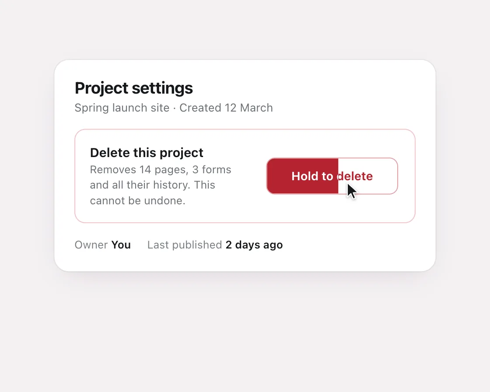

Hold to delete
Hold to delete is a DOM effect: slow fill while held, fast snap back on release. One plain JavaScript file with no dependencies; add it with npx motion-library add hold-delete.

Open it live, tune it and copy the code
What is Hold to delete?
Holding a delete button creeps a red fill across it; letting go early snaps it back.
How does Hold to delete work?
The fill is a clip-path on a red copy, so the label turns white exactly under it; linear while held, fast ease-out on release, both from the current fill.
How do I add Hold to delete to my website?
- In your project folder, run
npx motion-library add hold-delete. It writesanimations/hold-delete.js. Needs Node 18 or newer. - Import it and call it with a container element that has a size:
import fx from './animations/hold-delete.js'; const stop = fx(document.querySelector('#hero')); - Call
stop()to clean up, for example when a component unmounts.
Every setting below is also a flag, so you can install it already tuned: npx motion-library add hold-delete --holdMs 3000.
What settings can I tweak?
| Setting | Flag | Default | Range | Step |
|---|---|---|---|---|
| Hold (ms) | --holdMs | 1400 | 500 to 3000 | 50 |
| Snap back (ms) | --snapMs | 200 | 80 to 500 | 10 |
Specifications
- Renderer
- DOM (CSS and the Web Animations API)
- Category
- Micro & loading
- Dependencies
- None
- File size
- 7.1 KB, unminified
- Interactive
- No: it plays on its own
- Reduced motion
- Respects prefers-reduced-motion
- Licence
- MIT-0: use it anywhere, no credit needed
Source code
// Hold to delete in a project's danger zone: while the button is held, a red fill creeps across it at a slow, steady
// (linear) pace; letting go early snaps it back fast with an ease-out; holding to the end confirms, and the button says so.
// It feels right because the slow fill gives you time to change your mind, and the quick snap-back makes backing out feel safe.
const PARAMS = { holdMs: 1400, snapMs: 200 };
export default function (stage) {
const reduce = matchMedia('(prefers-reduced-motion: reduce)').matches;
const W = 540, H = 380;
const root = document.createElement('div');
root.className = 'hd-root';
root.innerHTML = `<style>
.hd-root { position: absolute; inset: 0; overflow: hidden; background: #f4f1f3; font-family: system-ui, -apple-system, "Segoe UI", sans-serif; color: #15171a; }
.hd-scene { position: absolute; left: 0; top: 0; width: ${W}px; height: ${H}px; transform-origin: 0 0; }
.hd-card { position: absolute; left: 60px; right: 60px; top: 40px; border-radius: 16px; background: #fff; box-shadow: 0 0 0 1px rgba(20,24,30,.06), 0 10px 30px -12px rgba(60,20,40,.18); padding: 20px 22px 22px; }
.hd-card h2 { margin: 0; font-size: 18px; font-weight: 700; letter-spacing: -0.02em; } .hd-card > p { margin: 4px 0 16px; font-size: 12.5px; color: #6b7076; }
.hd-zone { border: 1px solid #f3c4c8; border-radius: 12px; padding: 16px; display: flex; align-items: center; gap: 16px; }
.hd-zone b { display: block; font-size: 14px; font-weight: 650; } .hd-zone > div > span { display: block; margin-top: 3px; font-size: 12px; color: #6b7076; line-height: 1.4; }
.hd-btn { position: relative; flex: none; width: 150px; height: 42px; border-radius: 10px; border: 1px solid #e3a1a7; background: #fff; color: #b4232f; font: 650 13.5px system-ui, -apple-system, sans-serif; padding: 0; overflow: hidden; cursor: pointer; transition: transform .14s cubic-bezier(.23,1,.32,1); user-select: none; -webkit-user-select: none; }
.hd-btn.held { transform: ${reduce ? 'none' : 'scale(0.97)'}; } /* reduced motion: no press dip; the fill still shows progress */
.hd-btn > span { position: absolute; inset: 0; display: grid; place-items: center; pointer-events: none; }
.hd-fill { background: #b4232f; color: #fff; clip-path: inset(0 100% 0 0); }
.hd-done { background: #b4232f; color: #fff; opacity: 0; } .hd-done svg { margin-right: 6px; vertical-align: -3px; }
.hd-meta { margin-top: 16px; display: flex; gap: 18px; font-size: 12px; color: #7a7f85; } .hd-meta b { color: #15171a; font-weight: 600; }
.hd-cur { position: absolute; left: 0; top: 0; z-index: 9; pointer-events: none; filter: drop-shadow(0 1px 1.5px rgba(0,0,0,.3)); transition: transform .5s cubic-bezier(.77,0,.175,1); }
</style><div class="hd-scene"><div class="hd-card"><h2>Project settings</h2><p>Spring launch site · Created 12 March</p>
<div class="hd-zone"><div><b>Delete this project</b><span>Removes 14 pages, 3 forms and all their history. This cannot be undone.</span></div>
<button class="hd-btn" type="button"><span class="hd-lab">Hold to delete</span><span class="hd-fill">Hold to delete</span><span class="hd-done"><span><svg width="15" height="15" viewBox="0 0 16 16"><path d="M3.5 8.5l3 3 6-6.5" fill="none" stroke="#fff" stroke-width="2" stroke-linecap="round" stroke-linejoin="round"/></svg>Deleted</span></span></button></div>
<div class="hd-meta"><span>Owner <b>You</b></span><span>Last published <b>2 days ago</b></span></div>
</div><div class="hd-cur"><svg width="17" height="24" viewBox="-1 -1 17 24"><path d="M0 0v17.6l4.3-4.1 2.9 6.6 2.9-1.2-2.8-6.5h6.1z" fill="#15171a" stroke="#fff" stroke-width="1.3" stroke-linejoin="round"/></svg></div></div>`;
stage.append(root);
const scene = root.querySelector('.hd-scene');
const fit = () => { const w = stage.clientWidth, h = stage.clientHeight, s = Math.min(w / W, h / H, 1.3); scene.style.transform = `translate(${(w - W * s) / 2}px, ${(h - H * s) / 2}px) scale(${s})`; };
const ro = new ResizeObserver(fit); ro.observe(stage); fit();
const btn = root.querySelector('.hd-btn'), fill = root.querySelector('.hd-fill'), done = root.querySelector('.hd-done'), cur = root.querySelector('.hd-cur');
let fillAnim = null, doneAnim = null, held = false;
const progress = () => { const m = /inset\(\S+ (\S+)%/.exec(getComputedStyle(fill).clipPath); return m ? 1 - parseFloat(m[1]) / 100 : 0; };
function press() {
if (held) return; held = true; btn.classList.add('held');
const p = progress(); fillAnim?.cancel();
fill.style.clipPath = 'inset(0 0% 0 0)';
// slow and linear while held: the remaining distance at a constant speed
fillAnim = fill.animate([{ clipPath: `inset(0 ${(1 - p) * 100}% 0 0)` }, { clipPath: 'inset(0 0% 0 0)' }], { duration: PARAMS.holdMs * (1 - p), easing: 'linear' });
fillAnim.onfinish = () => { if (!held) return; held = false; btn.classList.remove('held'); doneAnim = done.animate([{ opacity: 0 }, { opacity: 1 }], { duration: 200, easing: 'cubic-bezier(0.23, 1, 0.32, 1)', fill: 'forwards' }); };
}
function release() {
if (!held) return; held = false; btn.classList.remove('held');
const p = progress(); fillAnim?.cancel();
fill.style.clipPath = 'inset(0 100% 0 0)';
fillAnim = fill.animate([{ clipPath: `inset(0 ${(1 - p) * 100}% 0 0)` }, { clipPath: 'inset(0 100% 0 0)' }], { duration: PARAMS.snapMs, easing: 'cubic-bezier(0.23, 1, 0.32, 1)' });
}
function reset() { doneAnim?.cancel(); fillAnim?.cancel(); fill.style.clipPath = 'inset(0 100% 0 0)'; }
let manual = -1e9;
const down = () => { manual = performance.now(); reset(); press(); }, up = () => release();
btn.addEventListener('pointerdown', down); btn.addEventListener('pointerup', up); btn.addEventListener('pointerleave', up);
// demo: the cursor presses, gives up halfway, then holds all the way; a beat on "Deleted", then the panel resets
const bx = () => ({ x: btn.offsetLeft + btn.offsetParent.offsetLeft + btn.offsetParent.offsetParent.offsetLeft + 90, y: btn.offsetTop + btn.offsetParent.offsetTop + btn.offsetParent.offsetParent.offsetTop + 26 });
const move = (x, y, down) => { cur.style.transform = `translate(${x}px, ${y}px) scale(${down ? 0.9 : 1})`; };
let timers = [];
const at = (ms, fn) => timers.push(setTimeout(() => { if (performance.now() - manual > 4000) fn(); }, ms));
function cycle() {
timers = [];
const b = bx(), hold1 = PARAMS.holdMs * 0.5;
at(0, () => { reset(); move(b.x + 60, b.y + 120, false); });
at(500, () => move(b.x, b.y, false));
at(1200, () => { move(b.x, b.y, true); press(); });
at(1200 + hold1, () => { move(b.x, b.y, false); release(); });
at(2300 + hold1, () => { move(b.x, b.y, true); press(); });
at(2300 + hold1 + PARAMS.holdMs + 60, () => move(b.x, b.y, false));
at(2300 + hold1 + PARAMS.holdMs + 1600, () => move(b.x + 60, b.y + 120, false));
timers.push(setTimeout(cycle, 2300 + hold1 + PARAMS.holdMs + 2400));
}
cycle();
return () => { timers.forEach(clearTimeout); fillAnim?.cancel(); doneAnim?.cancel(); ro.disconnect(); btn.removeEventListener('pointerdown', down); btn.removeEventListener('pointerup', up); btn.removeEventListener('pointerleave', up); root.remove(); };
}